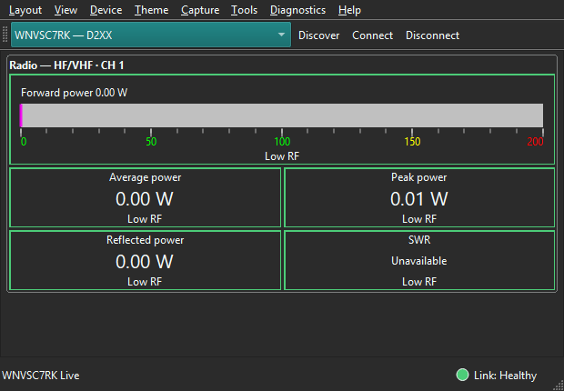
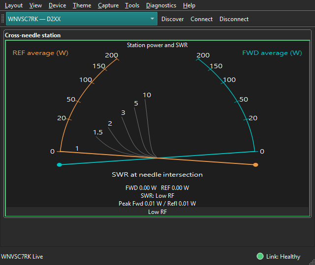
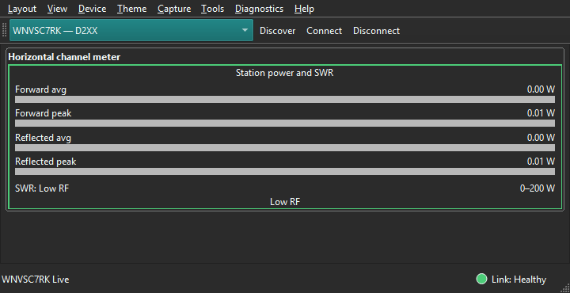
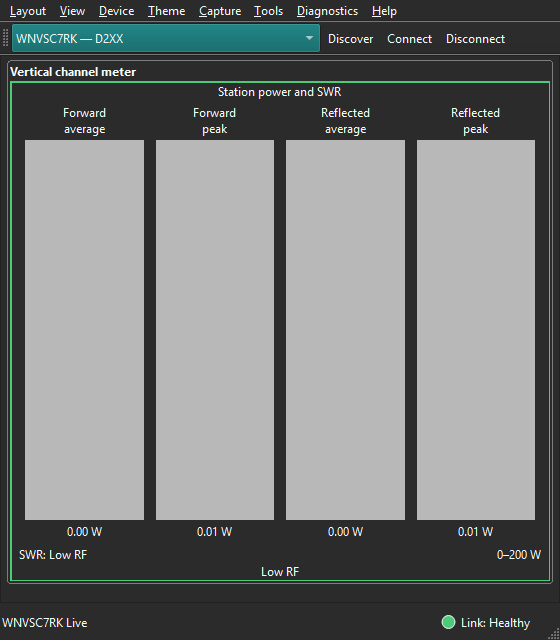

Layouts, groups and templates
On this page
- What is a layout?
- Start with an example
- Other arrangements you can create
- Groups keep related instruments together
- Save your work
- Make your first changes
What is a layout?
A layout is the arrangement of meters on your screen. Think of it as a customizable instrument panel for your station. You decide what to show, how large each meter should be, where it belongs and which WN-2 channel it reads. You are not limited to the supplied arrangements. Combine digital readouts, horizontal or vertical bars, analog meters, cross-needle meters, gain, temperature and other instruments. Make a compact panel beside your logging software or a larger monitoring screen. Save as many named layout files as you need for your operating activities.
Start with an example
Choose Layout → Station Layouts. Select Single Radio — HF/VHF for one coupler, or Radio and Amplifier — HF/VHF for input/output monitoring. Select your WN-2 identity when prompted and click Load Layout.

Single-radio example: a power bar with useful digital readings below it. Select image to enlarge.


Radio-and-amplifier example: separate input and output groups plus amplifier gain. Select image to enlarge.
These are starting points, not fixed screens. You can change any instrument, add more, remove what you do not need, and save your own version. Configure the actual coupler models separately in Device Settings.
Other arrangements you can create

A cross-needle station display. Choose Combined RF Channel with Analog display to create this style. Select image to enlarge.


A compact horizontal Combined RF Channel meter gathers related readings in one instrument. Select image to enlarge.


The same measurements arranged vertically for a different available screen space. Select image to enlarge.

For a contest, keep only the essential power and SWR readings visible. For amplifier setup, include input/output power, gain and DC readings. For station monitoring, add temperatures and digital inputs. Multiple instruments can show the same channel in different styles, and one layout can include more than one WN-2.
Groups keep related instruments together
A group is a named section such as Radio, Amplifier or Antenna. Each group has its own rows and columns. Instruments can occupy one cell or span several cells. The dashboard also has a separate setting for how many groups appear across the screen. Use Layout → Group columns to change groups across. Use an instrument's Properties in Edit Layout to change columns inside its group. These are different settings.
Save your work
Choose Layout → Save Layout As and give the arrangement a clear name. Save updates that file; Save As makes another named version. Open Layout loads a saved arrangement. An asterisk in the title bar means something has changed since the last save. The application remembers your layout when you close normally. Layouts save instrument choices, positions, labels and device assignments. They do not save passwords, running recordings or held peak history.
Make your first changes
Start with a copy of a supplied layout. Follow Layout Edit Mode to move, resize and duplicate instruments. You can Undo an edit, so there is no need to rebuild the whole dashboard after an unwanted move. To use a saved layout with another WN-2, change its instrument Device identity values. Renaming a group does not change those assignments.
Help home · RF StateSide · RayWn2App operator guide